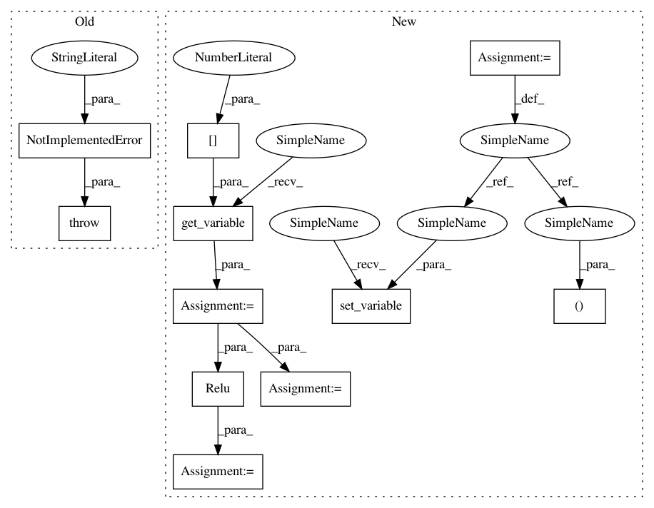

a4dbf61c7be5713b93d50e13fd48e0410967ee61,src/graph_transpiler/webdnn/frontend/keras/layers/advanced_activations.py,,_convert_thresholded_relu,#Any#Any#,42
Before Change
@KerasConverter.register_handler("ThresholdedReLU")
def _convert_thresholded_relu(converter: KerasConverter, k_op: keras.layers.ThresholdedReLU):
// TODO
raise NotImplementedError("[KerasConverter] keras.layers.ThresholdedReLU is not supported")
After Change
// noinspection PyUnusedLocal
@KerasConverter.register_handler("ThresholdedReLU")
def _convert_thresholded_relu(converter: KerasConverter, k_op: keras.layers.ThresholdedReLU):
x = converter.get_variable(converter.get_input_tensor(k_op)[0])
if k_op.theta == 0:
y, = Relu(None)(x)
else:
y, = ThresholdRelu(None, threshold=k_op.theta)(x)
converter.set_variable(converter.get_output_tensor(k_op)[0], y)
In pattern: SUPERPATTERN
Frequency: 3
Non-data size: 11
Instances
Project Name: mil-tokyo/webdnn
Commit Name: a4dbf61c7be5713b93d50e13fd48e0410967ee61
Time: 2017-07-04
Author: y.kikura@gmail.com
File Name: src/graph_transpiler/webdnn/frontend/keras/layers/advanced_activations.py
Class Name:
Method Name: _convert_thresholded_relu
Project Name: mil-tokyo/webdnn
Commit Name: 7cab92a106ec13aee7e14a9674340e8cc13c7e53
Time: 2017-07-15
Author: y.kikura@gmail.com
File Name: src/graph_transpiler/webdnn/frontend/chainer/functions/activation.py
Class Name:
Method Name: _convert_crelu
Project Name: mil-tokyo/webdnn
Commit Name: a4dbf61c7be5713b93d50e13fd48e0410967ee61
Time: 2017-07-04
Author: y.kikura@gmail.com
File Name: src/graph_transpiler/webdnn/frontend/keras/layers/advanced_activations.py
Class Name:
Method Name: _convert_thresholded_relu
Project Name: mil-tokyo/webdnn
Commit Name: d09e215274aa7212b4fc2caf070dd1eacf110134
Time: 2017-07-04
Author: y.kikura@gmail.com
File Name: src/graph_transpiler/webdnn/frontend/chainer/functions/basic_math.py
Class Name:
Method Name: _convert_absolute